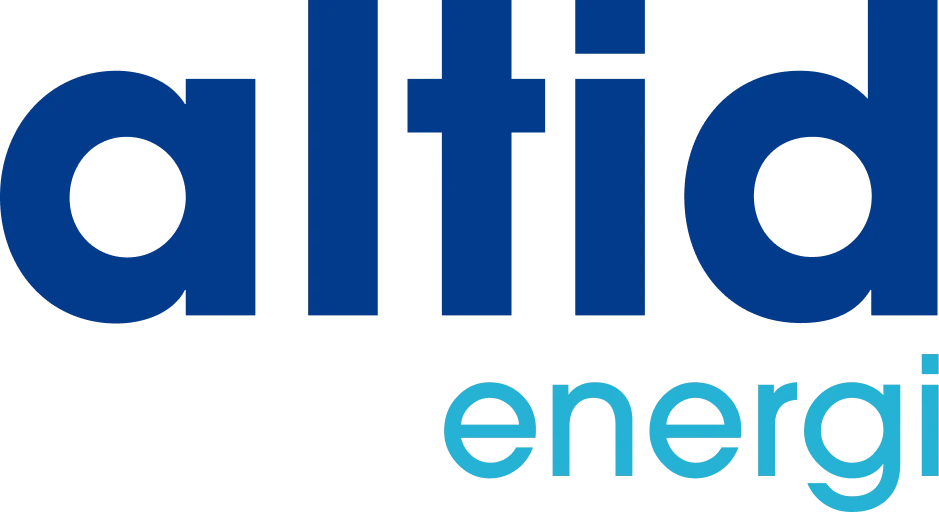
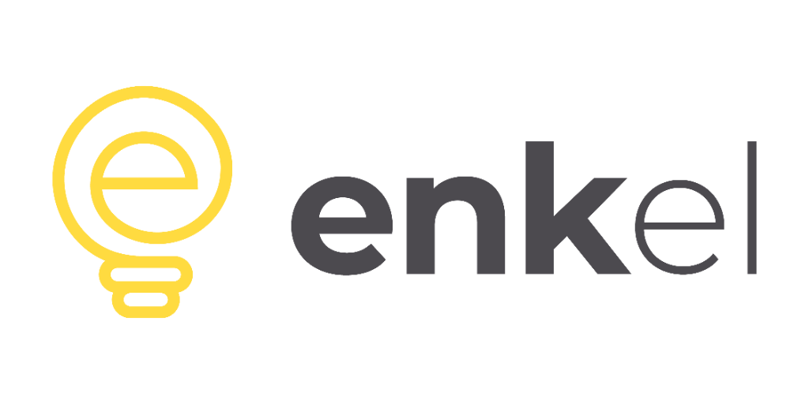

Nordisk Energi anmeldelse: pris, vilkår og erfaringer
Intet abonnement og 5 øre i tillæg (4,2 øre + 0,8 øre i handelsgebyr). Billigst ved lavt og middel forbrug, med betaling bagud.
Emil Rostgaard Clausen, stifter og redaktør
Det korte svar: Nordisk Energi koster 5 øre pr. kWh og 0 kr. om måneden (Spot). Ved 4.000 kWh betaler du 200 kr. om året til selskabet, plads 1 af 22 i vores sammenligning. Ingen binding, betaling bagud. Samlet score: 8,1 ud af 10 (22. oktober 2026).
Er du kunde hos Nordisk Energi? Se hvad du kan spare →
Alternativ til Nordisk Energi hos vores samarbejdspartnere
Altid Energi · Strøm til indkøbspris: 216 kr. om året. 16 kr. mere om året end den billigste (Nordisk Energi), plads 2 af 22 på pris. Ingen binding.
Vores vurdering af Nordisk Energi
Nordisk Energi er et af de bedste valg i vores sammenligning. Nordisk Energi er et mindre elselskab fra Søborg, der sælger variabel strøm uden abonnement. Selskabet oplyser selv, at alle priser er inkl. moms, og det gør produktet let at sammenligne.
Scoren beregnes ens for alle selskaber efter en fast formel. Se formlen.
Nordisk Energis priser og produkter
Spot koster 4,2 øre pr. kWh i tillæg plus et handelsgebyr på 0,8 øre, i alt 5 øre, og 0 kr. i abonnement. Det giver 100 kr. om året ved 2.000 kWh og 200 kr. ved 4.000 kWh. Dermed er Nordisk Energi det billigste selskab i vores sammenligning op til cirka 4.320 kWh om året. Flex har i stedet 0,8 øre og 29 kr. om måneden, og begge findes i en grøn udgave med oprindelsesgarantier fra vind.
| Aftale | Type | Tillæg / kWh-pris | Abonnement pr. md. | Pr. år ved 4.000 kWh | 1. år med intro |
|---|---|---|---|---|---|
| Spot | Variabel | 5 øre | 0 kr. | 200 kr. | 200 kr. |
| Flex | Variabel | 0,8 øre | 29 kr. | 380 kr. | 380 kr. |
| Spot+ (grøn) Grøn | Variabel | 30 øre | 0 kr. | 1.200 kr. | 1.200 kr. |
| Flex+ (grøn) Grøn | Variabel | 25,8 øre | 29 kr. | 1.380 kr. | 1.380 kr. |
Inkl. moms, tjekket 22. oktober 2026. Pris pr. år = tillæg × forbrug + 12 × abonnement + faste gebyrer ved billigste betalingsmåde (MobilePay 0 kr., Betalingsservice 9,75 kr., indbetalingskort 49 kr. pr. regning). Fastprisaftaler og særlige aftaler rangeres ikke, fordi de ikke kan sammenlignes direkte med variable aftaler. Oven i kommer spotpris, nettarif, Energinets tariffer, elafgift og moms, som er ens hos alle elselskaber. Tjek altid den aktuelle pris hos Nordisk Energi, før du bestiller. Kilde: nordiskenergi.dk/priser.
Hvad koster Nordisk Energi ved dit forbrug?
Tabellen viser, hvad du betaler til Nordisk Energi om året ved fem typiske forbrug, og hvor selskabet placerer sig blandt de 22 i sammenligningen.
| Årsforbrug | Billigste produkt | Pris pr. år | Svarer til pr. kWh | Placering | Til den billigste |
|---|---|---|---|---|---|
| 1.500 kWh | Spot | 75 kr. | 5,0 øre | 1 af 22 | Billigst |
| 2.000 kWh | Spot | 100 kr. | 5,0 øre | 1 af 22 | Billigst |
| 4.000 kWh | Spot | 200 kr. | 5,0 øre | 1 af 22 | Billigst |
| 8.000 kWh | Spot | 400 kr. | 5,0 øre | 2 af 22 | +184 kr. |
| 10.000 kWh | Flex | 428 kr. | 4,3 øre | 2 af 22 | +212 kr. |
Vælg Nordisk Energi i sparberegneren og se, hvad du kan spare ved dit præcise forbrug.
Fordele og ulemper ved Nordisk Energi
Fordele ved Nordisk Energi
- 0 kr. i abonnement på Spot
- Laveste samlede pris ved lavt og middel forbrug
- Betaling bagud og gratis MobilePay
- Ingen binding
Ulemper ved Nordisk Energi
- Handelsgebyret på 0,8 øre står på en separat linje
- Mindre kendt selskab
- Grøn udgave koster 25 øre ekstra pr. kWh
Det siger kunderne om Nordisk Energi
På Trustpilot har Nordisk Energi 4,0 ud af 5 baseret på 2.734 anmeldelser (aflæst 22. oktober 2026). Nordisk Energi er ikke blandt top 10 i EPSI's måling for 2025.
Trustpilot afspejler især oplevelsen ved salg og oprettelse, mens EPSI spørger eksisterende kunder om hverdagen. Læs de nyeste anmeldelser af Nordisk Energi på Trustpilot, og kig efter mønstre i de negative: handler de om priser, opgørelser eller ventetid?
Kilder: Trustpilot og EPSI Rating 2025.
Vilkår og betaling hos Nordisk Energi
| Betaling | Bagud |
|---|---|
| Gebyrer | MobilePay 0 kr., Betalingsservice 9,75 kr., indbetalingskort 49 kr. pr. regning |
| Introtilbud | Intet introtilbud lige nu |
| Binding | Ingen binding |
| Grøn strøm | Tilvalg |
| App | Se hos selskabet |
| Fortrydelsesret | 14 dage ved køb online eller pr. telefon |
| Opsigelse | Sådan opsiger du Nordisk Energi |
Hvem passer Nordisk Energi til?
Lejligheder og husstande op til cirka 4.320 kWh, der vil betale bagud og undgå abonnement.
Fakta om Nordisk Energi
| Navn | Nordisk Energi |
|---|---|
| Hovedsæde | Søborg |
| Ejerform | Nordisk Energi ApS |
| Hjemmeside | nordiskenergi.dk |
| Leverer til | Hele Danmark |
Alternativer til Nordisk Energi i samme prisleje

Altid Energi
Ren indkøbspris og et lavt, fast abonnement. Blandt de billigste op til 5.000 kWh om året.

Enkel Energi
Spotpris uden tillæg og 18 kr. om måneden uanset forbrug. Billigst med abonnement ved højt forbrug.
Gasel
Intet abonnement og 6 øre i tillæg. Blandt de billigste for små husstande, og du betaler bagud.
Nordisk Energi sammenlignet med andre
Ændringslog for Nordisk Energi
- : Alle private elaftaler er nu med, ikke kun det billigste produkt pr. selskab
- : Betalingsgebyr ved billigste betalingsmåde indgår nu i årsprisen
- : Ny kolonne: pris det første år inkl. introtilbud
- : Tillæg 4,2 → 5,0 øre/kWh (handelsgebyr på 0,8 øre lagt til). Flex tilføjet
- : Tilføjet til sammenligningen
- Første anmeldelse: 8.10.2026
Spørgsmål og svar om Nordisk Energi
Er Nordisk Energi et billigt elselskab?
Ved 4.000 kWh om året betaler du 200 kr. til Nordisk Energi, hvilket giver plads 1 af 22 i vores sammenligning (22. oktober 2026). Det er den laveste pris, vi har fundet ved det forbrug.
Hvad koster Nordisk Energi om måneden?
Abonnementet er 0 kr. om måneden, og tillægget 5 øre pr. kWh. Ved 4.000 kWh om året svarer det til 17 kr. om måneden til Nordisk Energi. Dertil kommer spotpris, nettarif og afgifter, som er ens hos alle selskaber.
Har Nordisk Energi binding?
Nej. Der er ingen binding på selskabets variable produkter.
Betaler man aconto hos Nordisk Energi?
Nej. Du betaler bagud for dit faktiske forbrug.
Hvordan skifter jeg til Nordisk Energi?
Du bestiller på Nordisk Energis hjemmeside med adresse, CPR-nummer og startdato. Nordisk Energi opsiger din nuværende aftale, og strømmen bliver ikke afbrudt. Du har 14 dages fortrydelsesret, når du bestiller online.
Hvordan opsiger jeg Nordisk Energi?
Det nemmeste er at bestille hos dit nye elselskab, som opsiger Nordisk Energi for dig. Se sådan opsiger du Nordisk Energi.
Sælger Nordisk Energi grøn strøm?
Ja, som tilvalg. Grøn strøm betyder, at selskabet køber oprindelsesgarantier fra vedvarende energi svarende til dit forbrug. Læs mere om grøn strøm.

Skrevet af Emil Rostgaard Clausen
Stifter og redaktør på SkiftElaftale.dk · LinkedIn
Emil står bag SkiftElaftale.dk og gennemgår elselskabernes priser og vilkår. Alle tal kontrolleres mod selskabernes egne prisblade og indberetninger, og hver pris har en dato. Siden drives af Emro Media, CVR 46727533. Om Emil · Metode · Redaktionelle retningslinjer · Rettelser
Er Nordisk Energi billigst for dig?
Vælg dit nuværende selskab og se besparelsen ved dit forbrug.